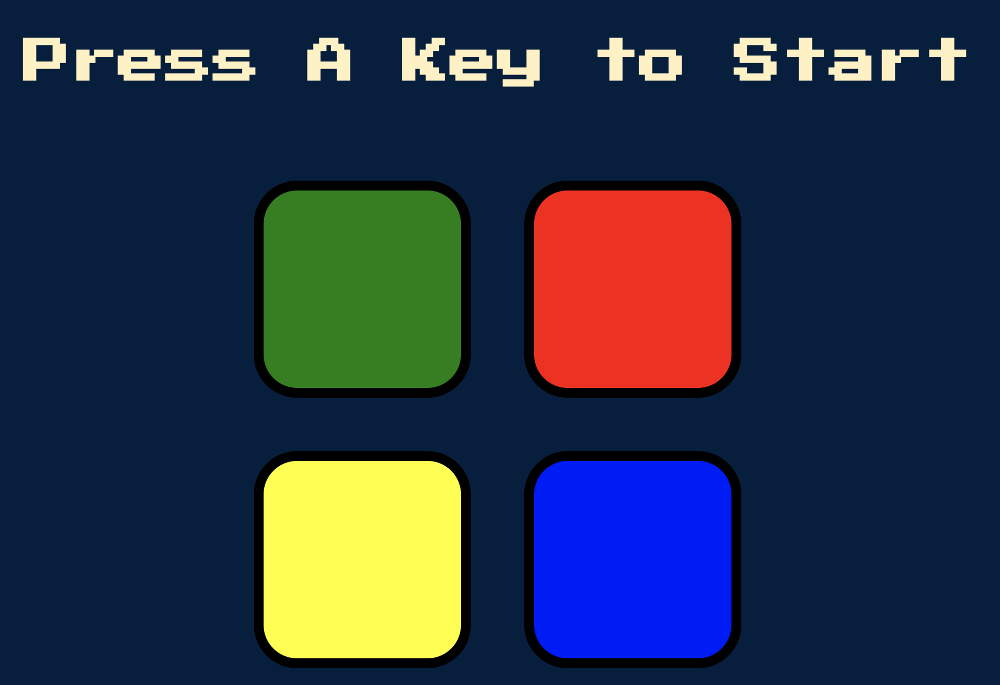
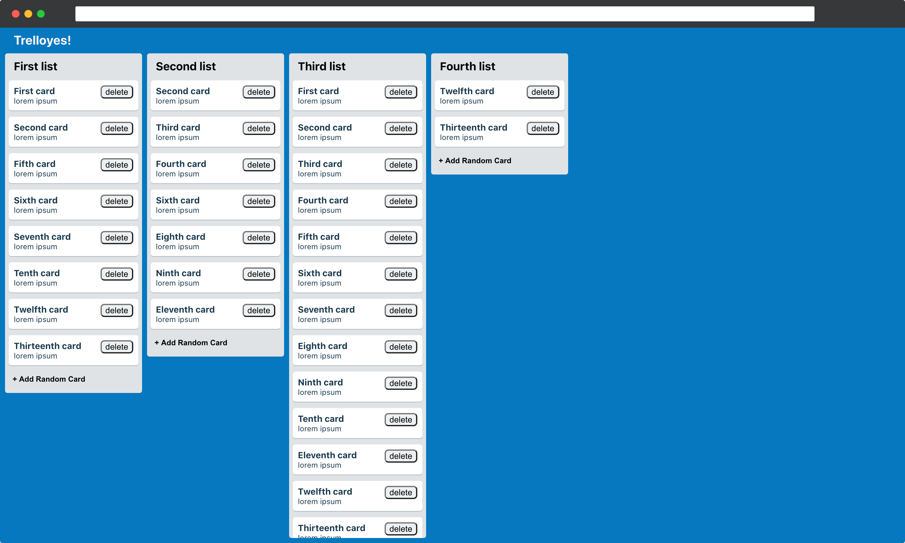

Projects
GleamSIS

A prototype of a student information system, developed by React, Node, Express and PostgreSQL. Easy to store, maintain and access data for a school system.
Technologies: React, Node, Express, PostgreSQL, CSS
Find My Activity

Find My Activity is designed for work from home parents. When kids are done with school but parents still have to work, they can simply Find an educating and fun activity for their children to keep learning.
Technologies: React, Node, Express, PostgreSQL, CSS
Movies and Books

Movies and Books app lets users search for books and movies at the same time. It makes calls to two different API providers and combines results. By default, the app searches for both categories but the user is able to choose either one of the two.
Technologies: jQuery, HTML5, CSS3, JavaScript, API
FIFA World Cup Quiz

Developed a quiz app using jQuery traversing and modification. This project asks questions about FIFA World Cup and your results are displayed at the end.
Technologies: jQuery, HTML5, CSS3, JavaScript
Google Book Search

Using Google Books API search a book. The results will show you the author and some description about the book.
Technologies: React, API, CSS3
Login Page w/ Errors

A simple login page that gives you customized errors when required information is not entered or entered in an unaccepted format. It was fun to make this feature.
Technologies: jQuery, HTML5, CSS3, JavaScript
Keeper App

Developed an interactive app to stay organized. You can create notes for the todo list, reminders, or just simple note-to-self.
Technologies: React, React Hooks, Babel, HTML5, CSS3, JavaScript
Simon Game
Web version of a well-known Simon game. A good example of jQuery usage and JavaScript algorithms. Press the flashed light and continue to sequence until you can't.
Technologies: jQuery, HTML5, CSS3, JavaScript
Trelloyes
A prototype of a collaboration tool to use to keep track of any type of projects.
Technologies: React, API, CSS3